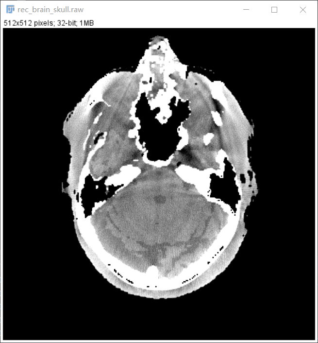
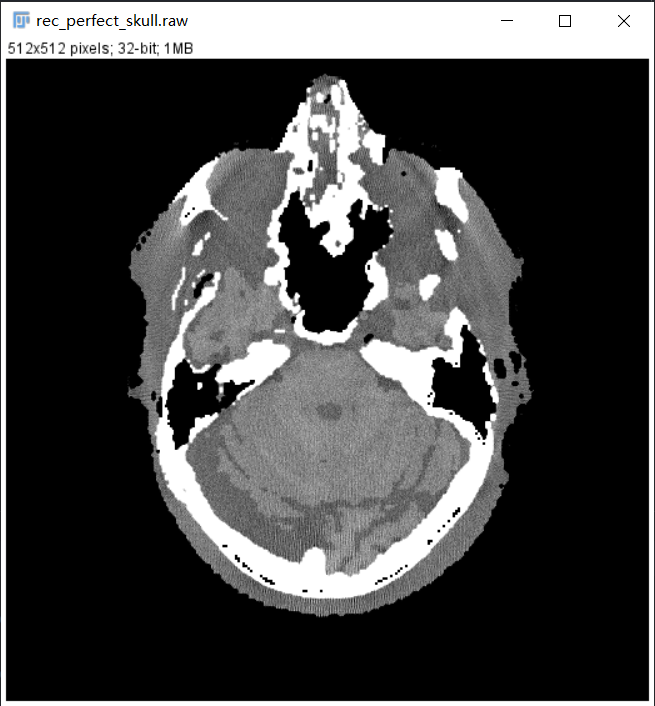
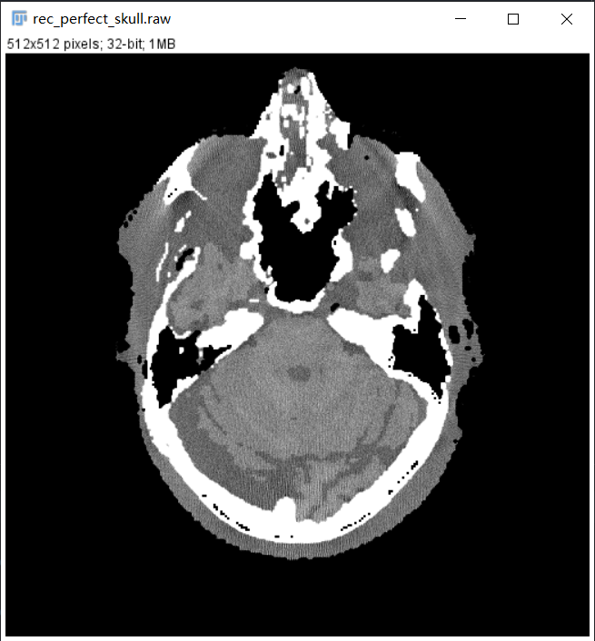

矫正方案：骨硬化
骨硬化 (Bone beam-hardening)
方案1. 多项式矫正1
在 杯状伪影矫正 方案1. 式 (4) 中，水束硬化矫正拟合了如下关系：
其中， \(I_w\) 为 X 射线穿过水等效组织后的光强，当射线路径上仅有软组织时，\(I_w\) 即为探测器收到数据。 \(P_W=\mu_{water,ref}\times L\) 表示对水束硬化矫正后的衰减系数作线积分。三到四阶多项式精度已足够。
当存在 两种不同的材料 (骨和水) 时，上述关系不再有效。然而，如果我们将两种材料按顺序放置 (一种材料的输出 X 射线强度是另一种材料的输入)，X 射线衰减关系可以用级联来近似，则线积分可表示为：
类似于\(\alpha_i\)，\(\beta_i\) 取决于第二种材料的衰减特性和 X 射线光谱。
如果我们在硬化矫正中将整个物体都当作水，那么误差 \(\Delta P_L\) 为：
\(\xi\) 是入射到骨上的强度与测量的输出强度之比的对数。非线性项产生了条纹和阴影伪影，线性项导致重建图像出现低频 CT 数移位。
因此，为了矫正骨束硬化伪影，需要估计 \(\xi\) ，这仅是骨结构的投影值。投影域包含软组织和骨骼，直接分离它们几乎是不可能的，我们转向图像域进行估计。即在图像域通过阈值分割得到 \(f_{bone}(r)\)，投影即得到 \(\xi\) 。
重新整理一下，顺序执行：
-
预先重建一个经过水束修正的图像
-
根据阈值分割图像为骨和软组织
-
骨头拿出来单独做投影
-
对骨投影做幂产生误差投影
-
重建误差投影以产生“纯伪影图片”
-
“纯伪影图像”从水束修正的图像中，按系数减去以产生校正图像
这种技术在减少暗带，阴影，或条纹伪影区域是相当有效的。骨-脑界面也变得清晰。如下图3. 所示，从左向右分别为：原图，水束硬化矫正，水束硬化矫正+骨硬化矫正。

 

注意
这种方案与水束硬化矫正方案1. 类似，也依赖能谱，当能谱未知时 \(\alpha_i\)，\(\beta_i\) 无法得知。当能谱发生变化时，拟合参数需要重新计算。（如何估计能谱？）
方案2. 材料分解矫正
根据 杯状伪影式 (1)(2)，理想单能下，post-log 值与物质衰减系数 \(\mu\) 之间为线性关系，重建图像无硬化伪影。所以，如果我们能通过理想单能情况下重建图像，就能消除图像中的水束，以及骨硬化伪影。
Q：如何获得理想单能下重建图像？
A：材料分解。
根据材料分解的相关知识，无论是在投影域还是图像域，都可以通过一定的方法获得图像域基材料的组成系数 \(\alpha_1(\vec r),\alpha_2(\vec r)\)。一般 CT 图并不是数字模体，不可能知道模体 100% 信息，所以用于硬化矫正的材料分解主要发生在 投影域，故该矫正方案也称为 双能分解矫正。
双能分解矫正的步骤如下：
-
经过 投影域材料分解，获得了位于位置 \(\vec r\) 的材料的线性衰减分解系数 \(\alpha_{PMMA}(\vec r), \alpha_{Al}(\vec r)\)。
-
模拟单能图像。选取某一能量，如选择 120keV，找出 PMMA 和 Al 在 120 keV 下的衰减系数，获得模拟单能衰减系数图像：
- 最后将 \(\mu(\vec r)\) 转为 HU 值：
提示
得到的 HU 值为模拟单能 120keV 下的 HU 值，根据需要可以选择其他单能。
注意
这种方案也依赖能谱，当能谱未知时拟合参数 \(\beta,\gamma\) 无法得知。当能谱发生变化时，拟合参数需要重新计算。（如何估计能谱？）
方案3. EBHC
4. 代码实现
| 硬化伪影矫正关键代码 | |
|---|---|
1 | |
完整实现 在这里
[注]：以上图片来自 ICRP 110 数字体模投影，模拟投影以及小动物 CT，仅供学习参考
-
Jiang H . Computed Tomography Principles, Design, Artifacts, and Recent Advances, 2nd Edition[M]. 2009. P290. ↩